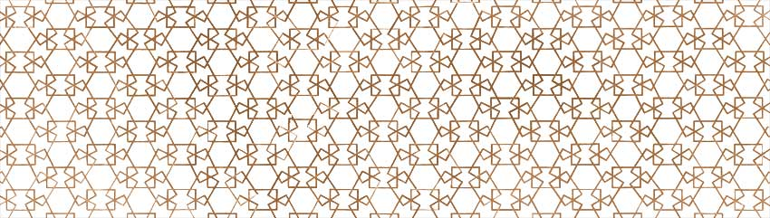

أذكار عند الدخول و الخروج من المنزل
الذكر عند الخروج من المنزل
-اللهُمَ إني أعُوذُ بِكَ أن أَضلَّ أوْ أُضَلَّ أَوْ أزلَّ، أو أُزلَّ، أوْ أظلِم أوْ أُظْلَم، أوْ أَجْهَلَ أوْ يُجْهَلَ عَلَيَّ .
الذكر عند الدخول المنزل
- بسم الله ولجنا ،وبسم الله خرجنا ، وعلى ربنا توكلنا ، ثم ليسلم على أهله.
